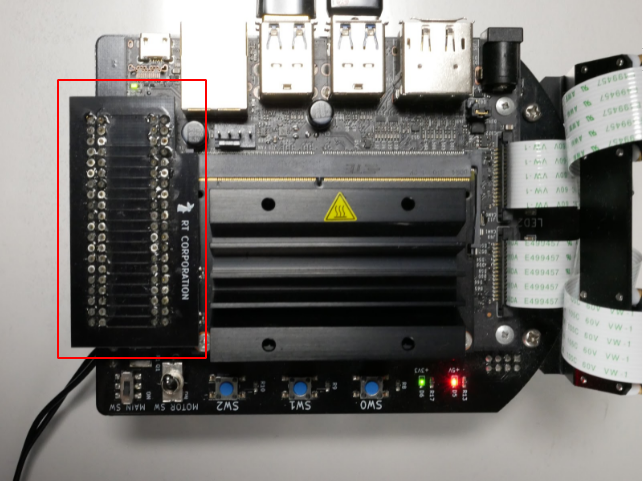
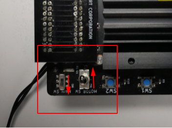
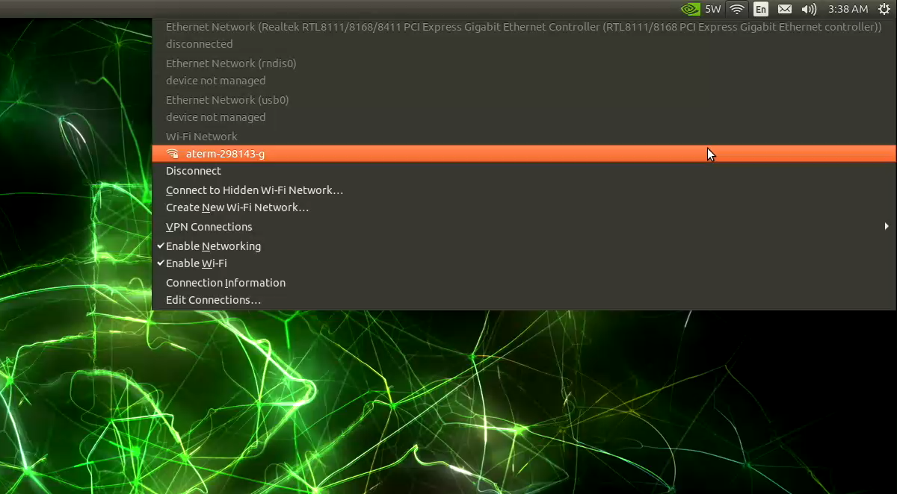
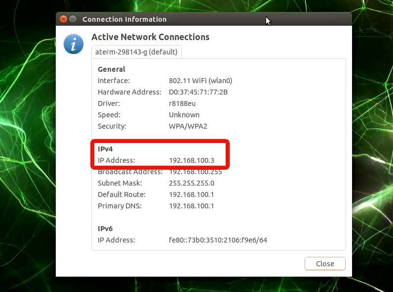

イメージファイルの書き込みと初期設定
このページでは、Jetson Nano Mouse用のイメージファイル の書き込み方法と初期設定について説明します。
このイメージファイルはカスタム版JetPackです。
JetPackはJetson Nano用のLinuxであるL4TをベースとしてCUDAドライバなどのソフトウェアをまとめたものです。
カスタム版JetPackは公式のJetPackのイメージファイルをベースとしてJetson Nano Mouse向けに機械学習ライブラリのPyTorchやTensorflow、
プログラム実行環境であるJupyterLab等があらかじめインストールされています。
その他、Jetson Nano MouseのLEDやモータを駆動するために必要な
デバイスドライバ
があらかじめインストールされています。
使用機材
- Jetson Nano Mouse本体
- Jetson Nano Mouse用電源（バッテリでも電源変換ケーブルつきACアダプタでも可）
- NVIDIA Jetson Nano 開発者キット B01 ※1
- microSDカード ※2
- HDMI入力付きのモニタ
- USBキーボードとマウス
- USB接続の無線LANアダプタ（オプション） ※3
- 操作用ノートパソコン
※1 Jetson Nanoについて
Jetson Nano開発者キットには以下の2種類が存在します。
- 現行モデルのCSIカメラを2つ搭載できる「NVIDIA Jetson Nano 開発者キット B01」
- 旧モデルでCSIカメラを1台のみ搭載できる「NVIDIA Jetson Nano 開発者キット A01」
2021年11月現在、新品で販売されているJetson Nanoの大半はCSIカメラを2つ搭載できる「NVIDIA Jetson Nano 開発者キット B01」ですが、予め確認した上でのご購入をおすすめします。
Info
以前発売されていたモデルの「NVIDIA Jetson Nano 開発者キット A01」および現行モデルのメモリ2GBのJetson Nano 開発者キットでもJetson Nano Mouse自体は制御可能です。
ただし、Jetson Nano Mouseについている2台のカメラのうちの1台のみの接続となります。
カメラが1台のみの接続の場合およびメモリが少ないJetson Nanoの場合は一部のコンテンツを利用できません。
※2 microSDカードについて
- microSDカードの容量は64GB以上を推奨します
- microSDカードの転送速度はUHS-1以上が推奨されています
- SDカードのスピードクラスについてはSD Associationの解説を参照してください
- 十分な速度が出ないmicroSDカードを使うと正常にOSが起動しない場合があるようです
※3 無線LANアダプタについて
無線LANアダプタはTP-Link社のTL-WN725Nで動作確認をしています。
イメージファイルのダウンロードと書き込み
イメージファイルをダウンロードし、microSDカードに書き込みます。
Warning
microSDカードの取り付けやJetson Nanoの電源操作時に、 Jetson NanoやJetson Nano Mouse本体を故障させないように注意してください。 詳細はJetson Nano Mouseの製品マニュアルを参照してください。
- microSDカードにイメージファイルを書き込むためのアプリケーションを用意します。 ここではbalenaEtcherを使用します。
- 下記のリンクをクリックして、イメージファイル(
jnmouse_jp451_v3.zip)をダウンロードします- https://drive.google.com/open?id=1-eIXdtrHD8VY3M7C0sCRKE9LNfNPd97h
- zipファイルのサイズは約9GBですが、展開後は約30GBに増えます。
- イメージファイルの詳細は「イメージファイルについて」を参照してください
- microSDカードをPCに接続します
- Etcherを起動し、イメージファイルをmicroSDカードに書き込みます

起動
Jetson Nano Mouseの電源投入までの手順を説明します。より詳しい手順については取扱説明書を参照してください。
- 電源がOFFになっていることを確認し、microSDカードをJetson Nanoに取り付けます。
- カチッと音がするまで差し込みます。
- 下図左側の写真の状態ではまだ装着できていません。
- 下図右側の写真のようにmicroSDカードとヒートシンクの縁が揃えば装着できています。

- カチッと音がするまで差し込みます。
- コネクタ基板の向きを確認します。
- 
- Jetson Nano Mouseの電源を入れます。Motor SWをOFFにし、Main SWをONにします。
- 
初期設定
Jetson Nano Mouseの電源投入後の初期設定について説明します。
ここからはJetson Nano Mouseに搭載されたJetson Nanoで操作します。 SSHやVNCでログインしたり、HDMI接続ができるモニタとキーボードを繋ぐ方法とありますが、今回はモニタとキーボードを繋いで初期設定まで行います。
HDMI接続ができるモニタとUSBキーボード、マウスを接続します。今回は無線でインターネット接続したいのでさらに無線LANアダプタを接続します。

ログインユーザ名とパスワード
ログインユーザ名とパスワードはどちらもjetsonです。
ネットワーク設定
無線LANを使用する場合は、画面上のメニューから接続先を設定します。

ネットワーク接続が完了すると、Connection InformationからIPアドレスを確認できます。

Jetson Nanoのパフォーマンス設定とブートローダ更新
- Ctrl+Alt+Tを入力してターミナルを起動します
- 次のコマンドを実行し、Jetsonのパフォーマンス設定を行います
$ cd ~/jnmouse_utils/scripts $ ./configure-jetson.sh - 次のコマンドを実行し、ブートローダを更新します
$ cd ~/jnmouse_utils/scripts $ ./update-qspi.sh- 「ブートローダについて」に書かれている注意事項も確認してください
SPI通信の有効化
Jetson NanoのGPIOを設定するためのツールであるJetson-IOを使って、SPI1を有効にし、
Jetson NanoとJetson Nano Mouseの基板が通信できるようにします。
これによりJetson Nano Mouse前方の距離センサが使えるようになります。
- 次のコマンドを実行し、Jetson-IOを起動します
$ sudo /opt/nvidia/jetson-io/jetson-io.py Configure 40-pin expansion headerを選択し、 spi1を有効にするfunctionとして選択します。
spi1を有効にするfunctionとして選択します。
 function選択後は
function選択後はBackを選び、メニューに戻ります。Select one of the following options:と言われるので、Save and reboot to reconfigure pinsを選択して再起動します。
デバイスドライバの更新
Jetson Nano Mouseのデバイスドライバを更新する場合は次のコマンドを実行します
$ cd ~/JetsonNanoMouse
$ git pull origin master
# デバイスドライバのアンインストール
$ sudo make uninstall
# デバイスドライバのビルド
$ make build
# デバイスドライバのインストール
$ sudo make install
その他
イメージファイルについて
Jetson Nano Mouseのイメージファイルは、 Jetson Nano用のOSであるJetPackをベースに作成しています。 このイメージファイルには、 Jetson Nano Mouseのデバイスドライバや 機械学習ライブラリのPyTorchと Tensorflow、 プログラム実行環境であるJupyterLab等が あらかじめインストールされています。
イメージファイルの詳細や最新の情報について知りたい場合はGitHubリポジトリを参照してください。
- セットアップ方法：https://github.com/rt-net/jnmouse_utils/tree/master/setup-scripts
- イメージファイル作成用スクリプト：jnmouse-setup-jetpack-4-5-1.sh
ブートローダについて
Jetson NanoにはSDカードとは別にブートローダが書き込まれたQSPI-NOR Flashメモリが存在します 1 2。
ブートローダを更新すると、JetPack 4.5から導入されたMaxSPIと呼ばれる新しいバージョンのものに置き換わります 3。
ブートローダを更新すると以下の2つの影響があります。
- 対象のSDカードのイメージは、JetPack 4.4以前の旧ブートローダを搭載したJetson Nano開発キットでは動作しなくなります
- 対象のJetson Nano開発キットは、以前のブートローダを使用したイメージでは動作しなくなります
なお、SDK Managerを使ってJetPack 4.4以前のバージョンを書き込むことでブートローダは元に戻せます。 更新しないで古いバージョンのブートローダを使用することもできますが、その場合はSPI通信機能が使用できません。
ブートローダの詳細はNVIDIA社の公開する情報 （https://developer.nvidia.com/embedded/linux-tegra-r325） をご確認ください。
-
What is QSPI-NOR - Jetson & Embedded Systems / Jetson Nano - NVIDIA Developer Forums
https://forums.developer.nvidia.com/t/what-is-qspi-nor/145758 ↩ -
QSPI-NOR BOM addition for Jeton Nano developer kit modules - Jetson & Embedded Systems / Jetson Nano - NVIDIA Developer Forums
https://forums.developer.nvidia.com/t/qspi-nor-bom-addition-for-jeton-nano-developer-kit-modules/173477 ↩ -
JetPackインストール中に表示されるメッセージから名称を確認できます。

さらにhttps://developer.nvidia.com/embedded/linux-tegra-r3251より"L4T Driver Package (BSP)"をダウンロードすると詳細を確認できます。 ↩